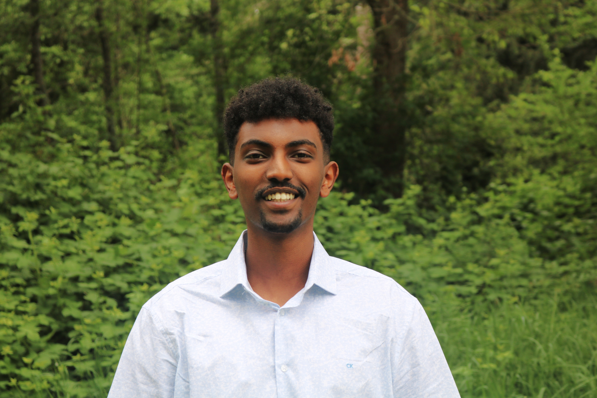

Abel Legesse

Summary
I am an international Student from Ethiopia currently studying Computer Science at Pacific Lutheran University.
Education
- Pacific Lutheran University – Tacoma, WA -- May 2026
- Bachelor of Science: Computer Science
- GPA: 4.0 in the first semester
- Dean’s List in the fall semester of 2022
-
School of Tomorrow – Ethiopia, Addis Ababa -- July 2021
- GPA: 4.0
Experience
Math Tutoring Assistant – School of Tomorrow Jun 2021 to Sep 2021
- Collaborated with students to complete homework assignments.
- Planned lessons for the allotted time to strengthen weak subjects and build skills on math subject.
- Motivated students towards learning and studying to build self-confidence and reduce fear of
failure.
- Supported students with helpful study habits and exam strategies that can help them during
math exams.
File organizer – Tadesse Desta Import and Export May 2022 to July 2022
- Examined, categorized, and sorted incoming documents.
- Maintained physical and computer-based filing systems.
- Tracked incoming and outgoing files and materials and maintained accurate records for potential
discrepancies.
Commons Student Employee – Student Cafeteria December 2022 to Present
- Enforce policies and communicated expectations to prevent students from taking food from the cafeteria.
- Received regular feedback from student customers regarding the quality of the food, service, and overall
dining experience.
- Demonstrate a strong work ethic and commitment to excellence in all aspects of the job, including
punctuality, attendance, and attention to detail.
Math Tutor Volunteer – Parkland Literacy Center, PLU March 2023 to Present
- Assist students in exam preparation and provide homework help.
- Help students understand math concepts and problem-solving strategies.
- Work collaboratively with other tutors and staff members to ensure a cohesive and effective learning
environment.
- Uphold the policies and standards of the literacy center and university.
Skills
- Computer Language:Java, HTML, CSS, Python, SQL
- Language: Amharic (native), English (fluent)
- Organizational skills, problem-solving abilities, time management
- Microsoft Excel
Other